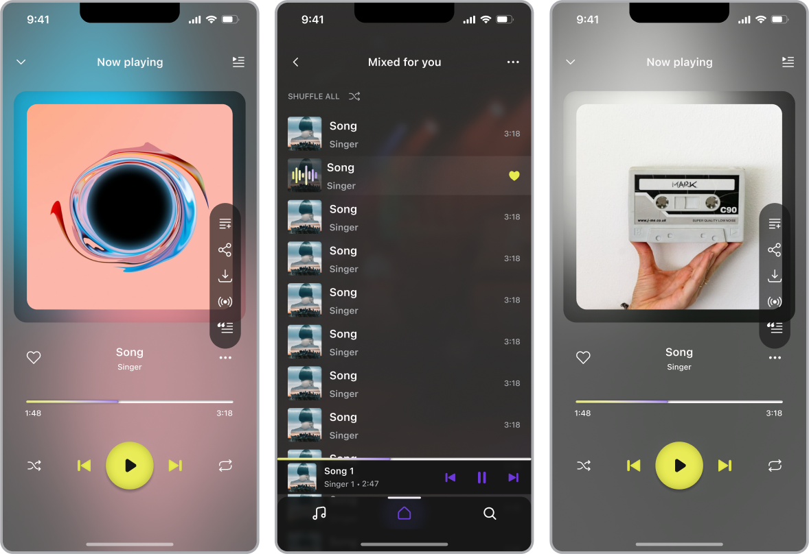

О проекте
Сервис для прослушивания музыки, предоставляющий
основной функционал, привычный современным пользователям музыкальных сервисов: умная система
рекомендаций, сохранение треков для прослушивания офлайн, добавление в избранное и составление
плейлистов + множество тематических подборок. Есть платная подписка и бесплатный тестовый период. На
тарифах без подписки отображается контекстная реклама и доступен не весь функционал.
ЦА
Пользователи музыкальных сервисов, которые часто
выполняют рутинные задачи, занимаются спортом, проводят много времени в дороге и конечно же просто
ценители музыки.
Задача
Я выбрала эту нишу не потому, что мне было, что предложить ей на тот момент.
Своей целью я ставила скорее изучение привычных паттернов, отработку интерфейсных решений и опыт
проектирование таких популярных сценариев как онбординг, регистрация, поиск, навигация между
экранами и т.д.
Если бы передо мной стояла цель отстроиться от конкурентов и проявить
продуктовой подход, то я бы посмотрела в сторону того, что бы разработать приложение, сочетающее
основные преимущества конкурентов, такие как: прослушивание радио-станций, подкастов или аудиокниг.
А также постаралась бы сделать упор на пользовательский контент, обмен им и создание комьюнити,
разделяющего определенные взгляды и вкусы, сделав на это ставку и в UI. В таком случае ЦА было бы
немного другой + расширилась за счет создателей контента.
Авторизация и онбординг
Вход возможен двумя способами: через гугл-аккаунт или внутренние логин и
пароль. Пагинация снизу отображает количество пройденных шагов до доступа к контенту.
При первом запуске пользователь указывает 5 любимых исполнителей, чтобы сразу
сделать контент более релевантным, в дальнейшем на выдачу также будут влиять прослушанные треки. Выбор
исполнителей можно будет изменить или дополнить через меню настроек (доступно через фото профиля на
стартовом экране в верхнем левом углу), которое так же даёт возможность редактировать данные профиля и
оформить платную подписку.

Главная и навигация
В нижнем меню доступ к трем разделам: библиотека, главная и поиск. Структура
разделов во многом унифицирована, что бы не плодить слишком много разных элементов и сущностей.
Альтернативный способ навигации: свайпы, но только в местах, где нет горизонтального скроллинга.
В разделах с горизонтальным скоролом пользователю доступны первые 10
элементов, чтобы увидеть весь контент необходимо перейти в раздел нажатием “see all”, внутри есть
отдельный поиск. А для упрощения доступа к контенту большинство элементов имеют кликабельную область по
всей площади, а не только на заголовке.

Раздел “главная” содержит подразделы:
- персональная подборка треков;
- тематические миксы пользователей;
- подборки от редакции по жанрам и десятилетиям;
- недавно прослушанные треки.
Раздел “библиотека” полностью формируется пользователем и объединяет
подразделы:
- треков, добавленных в избранное;
- сохраненных в память устройства для прослушивания офлайн;
- сохраненные плейлисты (свои и других пользователей);
- любимых исполнителей.
Поиск и карточка исполнителя
Поиск также расположен в нижней навигации, так как это одна из самых
частоиспользуемых функций, поэтому точка входа должна располагаться в зоне досягаемости, при работе
одной рукой. Раздел поделен на сегменты: общий поиск, по песням, артистам и альбомам. При нажатии на
инпут отображается история поисковых запросов, а с началом ввода подключается умный поиск,
подсказывающий варианты запроса.
Плеер
Плеер имеет два варианта использования: в полноэкранном и свернутом виде. В
мини-плеер вынесены самые необходимые действия: воспроизведение/пауза, следующая/предыдущая композиция.

Выводы
1. В процессе были проработаны несколько итераций, в ходе которых я
переосмыслила некоторые решения.
2. Основные проблемы были с четкостью структуры информации (страдало правило
близости) и размерностью типографики (изначальный вариант оказался слишком мелким, особенно для более
больших устройств).
3. Для тестов я использовала метод сортировки карточек (это был особенно
интересный опыт) и простое сценарное тестирование, когда пользователи выполняли мои задания на
кликабельных прототипах + небольшое интервью после.
4. Изначально поиск был закреплен сверху экрана. Это заставляло делать усилия,
что бы дотянуться к нему, рискуя уронить телефон :) или подключать вторую руку. Сегменты в разделе
поиска тоже были добавлены не сразу и выдача предполагала “солянку” из исполнителей, композиций и
альбомов.
Библиотека, мудборд, референсы
Лучшие практики и референсы я искала в основном на сайте mobbin, изучая
существующие продукты: YouTube Music, Pandora, Spotify, Apple Music и другие.
Цветовая палитра выбиралась из тех соображений, что основное цвета отлично
дополняют друг друга (на цветовом круге расположены напротив) и не встречаются ни у одного конкурента, а
значит положительно будут влиять на узнаваемость продукта.